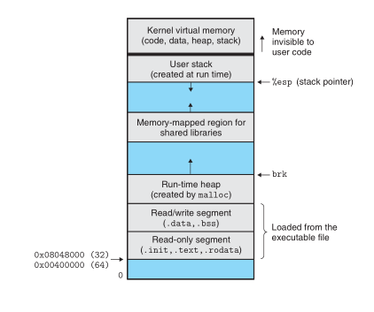
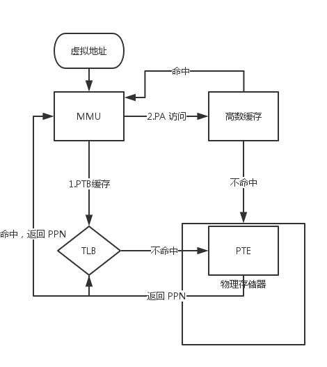

第一章
总览，主要有三个点
源文件，预处理器->读取头文件等等，编译器->汇编程序，汇编器->机器语言，最后链接器->链接其他提供函数调用的文件最后成为可执行文件
存储设备字塔结构，寄存器，L1，L2，L3高速缓存，内存，磁盘，网络。越高的存储设备越快，但越贵
操作系统，的几个主要概念，进程，线程，虚拟存储器，文件
第二章
进制
- 10->16: \(x=q_0\times16+r_0;q_0=q_1\times16+r_1...\)直到 \(q_{n} = 0\)，\(r_nr_{n-1}...r_0\)就是所求的16进制。
- 16->10: 16进制数 H 序列为\(h_nh_{n-1}..h_{1}h_0\)，那么十进制 \(n=16^n\times h_n+16^{n-1}\times h_{n-1}+...+h_0\)
- 2->10: 与 16 进制相似
- 10->2: 与 16 进制相似
16 与 2 的一个特例，若 \(x=2^n\)，n为非负整数。将 n 表示为 i+4j，x 的 16 进制表示为 0xa0..0(j个0)。因为 16 进制中一个 0 等于 2 进制中 4 个 0，所以 j 为 n/4 的商，i 为余数，所以 a 的值为1（i=0），2（i=1），4（i=2），8（i=3）。
字长
对于字长为 w 位的机器而言，虚拟地址的范围为 \(0～2^{w}-1\)，程序最多能访问 \(2^{w}\) 个字节。
大小端
大小端，即字节序问题，一个字节序列构成一个数或者字符，读取这个字节顺序（最低有效位到最高有效位）应该由左往右读还是由右往左读。最低有效位在最前面的方式（由左往右）叫小端法（little endian），最高有效位在最前面的方式（由右往左）叫大端法（big endian）。
以地址在 0x100 的 int 数值 0x1234567 为例，int 需要 4 个字节，0x100 是其所占用的地址中最小的一个。
| 0x100 | 0x101 | 0x102 | 0x103 | |
|---|---|---|---|---|
| 大端法 | 01 | 23 | 45 | 67 |
| 小端法 | 67 | 45 | 23 | 01 |
大多数 intel 兼容机使用小端法
C 语言中的位运算
~非&与|或^异或
移位运算
- 逻辑左移，向左移位补零： \([x_n-1,x_n-2,...,x_0] << k = [x_n-k-1,x_n-k-2,...,x_0,0,...,0]\)
- 逻辑右移，向右移位补零： \([x_n-1,x_n-2,...,x_0] >> k = [0,...,0,x_n-1,x_n-2,...,x_k]\)
- 算术右移，向右移位补最高符号位： \([x_n-1,x_n-2,...,x_0] >>> k = [x_n-1,...,x_n-1,x_n-1,x_n-2,...,x_k]\)
C 中的位运算和移位是大小端无关的。c - Does bit-shift depend on endianness? - Stack Overflow
布尔代数
整域 \(\mathbb{Z}\) 是一个整环，加法，乘法，加法逆运算，0和1分别为加法单位元与乘法单位元
布尔代数，\(<\{0, 1\}, \vert, \&, ˜, 0, 1>\)， 与整环的区别在于
- 加法到乘法的分配律。
- -(减法)与~（取补）的区别
- 补律（Complement）
- Idempotency
- Absorption
- 摩根法则（DeMorgan’s laws）
\(<\{0, 1\}, \hat{}, \&, I, 0, 1>\) 就是一个环，等同于整数模 2 环。I 是一个运算，令 I(a) = a，满足 a^I(a) = a^a =0。异或 ^ 是加法，& 是乘法。
\(<\{0, 1\}^w, \vert, \&, ˜, 0^w, 1^w>\) 是布尔代数
\(<\{0, 1\}^w, \hat{}, \&, ˜, 0^w, 1^w>\) 布尔环
集合 \(<P(S), ∪, ∩, \overline{}, ∅, S>\) 也是布尔代数
整数
用 \(\vec x\) 表示二进制序列
无符号（unsigned）编码:
\[B2U_w(\vec x)=\sum_{i=0}^{w-1}x_i2^i\]补码(two’s-complement)编码
\[B2T_w(\vec x)=-x_{w-1}2^{w-1}+\sum_{i=0}^{w-2}x_i2^i\]有符号与无符号的转换
\[B2U_w(\vec x) - B2T_w(\vec x) = 2^wx_{w-1}\\ B2U_w(\vec x) = B2T_w(\vec x) + 2^wx_{w-1}\\ \vec x = T2B_w(x)\\ B2U_w(T2B_w(x)) = x + 2^wx_{w-1}\\\] \[\begin{equation} T2U_w(x)= \begin{cases} x+2^w &{x<0}\\ x &{x\geq 0} \end{cases} \end{equation}\]位扩展
用算术右移扩展后的数值仍与原数值相等。可由\(B2T_{w+1}([x_{w-1},x_{w-1},...,x_0])=B2T_w([x_{w-1},...,x_0])\)证得。
位截断
将 w 位截断为 k 位时，直接丢弃高 w-k 位。
- 无符号 \(B2U_k([x_{k-1},...,x_0])=B2U_w([x_{w-1},...,x_0])mod 2^k\)
- 有符号 \(B2T_k([x_{k-1},...,x_0])=U2T_k(B2U_w([x_{w-1},...,x_0])mod 2^k)\)
整数运算
\(+_w^u\) 表示 w 上的无符号加法。
\[\begin{equation} x+_w^u y= \begin{cases} x+y &{x+y<2^w}\\ x+y-2^w &{2^w \leq x+y < 2^{w+1}} \end{cases} \end{equation}\]因为 \(x < 2^w,y<2^w;\)所以 \(x+y-2^w < x < y\)，可由此法判断无符号加法是否产生溢出。
补码加法
\[\begin{equation} x+_w^t y= \begin{cases} x+y-2^w &{2^{w-1}\leq x+y}\\ x+y &{2^{w-1} \leq x+y < 2^{w-1}}\\ x+y+2^w &{x+y < -2^{w-1}} \end{cases} \end{equation}\]补码溢出:
//补码溢出有两种情况，两个负数相加产生负溢出，结果为正数，两个正数相加产生正溢出，结果为负数
//检查符号位是否一致便可得出是否溢出
int tadd_ok(int x,int y){
if(x>0&&y>0&&x+y<0){
return 0;
}else if(x<0&&y<0&&x+y>0){
return 0；
}else{
return 1;
}
}
补码的非
-x = ~x+1
乘法
无符号乘法，整数乘法的结果模2^w。
补码乘法，也是一样，可由无符号乘法推导出来。
乘以2的幂时，x*2k = x « k
乘以常数
大多数机器上乘法需要 10 个甚至更多个时钟周期。
将常数分解成为，多个2^a的项相加的和。可将乘法转换为多个加/减法和移位操作。
x*14=x*(2^3+2^2+2) 会表示为 (x<<3)+(x<<2)+(x<<1) 或 x*14=x*(2^4-2) 会表示为 (x<<4)-(x<<1)
除法
偏置（biasing）
浮点数
IEEE 浮点表示
第三章
- Intel IA32，1978
- x86-64
45年来，晶体管的数量保持18个月翻一翻。
gcc 工作流程
- 预处理器，插入 #include 文件，扩展 #define 的宏
- 编译器，编译成汇编文件
.s - 汇编器，转化成目标(机器)代码
.o文件 - 链接器，合并库函数，生成可执行文件
ISA
汇编
两种汇编代码格式
ATT 和 Intel，GCC 默认是 ATT，Microsoft 的工具默认是 Intel。
数据格式
- bit = 1bit
- nybble = 4 bits
- byte = 8 bits
- WORD = 16 bits
- DWORD(double) = 32 bits
- QWORD(quad) = 64 bits
汇编指令有个后缀用来表示操作数的大小，比如 movl、movw、movb
- b 表示 1 bit
- w 表示 word
- l 表示 long word，也是就 double word
寄存器
IA32 有 8 个存储 32 位值的寄存器
- %eax %ax(%ah,%al) # 被用来返回函数的值
- %ecx %cx(%ch,%cl)
- %edx %dx(%dh,%dl)
- %ebx %bx(%bh,%bl)
- %esi %si
- %edi %di
- %esp %sp(栈指针)
- %ebp %bp(帧指针)
以 %eax 为例，%eax 表示寄存器中31到0所有的位， %ax 表示 [15,0],%ah[15,8], %al [7,0]
操作数（operand）
操作数，即执行一个操作所要引用的源数据值，及放置结果的目标位置。操作数有三种类型
- 立即数（immediate），书写方式是
$后面跟一个整数。 - 寄存器（register），表示某个寄存器的内容，可以是双字 %eax、单字 %ax、字节 %ah
- 存储器（momory），根据有效地址访问某个存储器位置。
寻址模式
Imm（Eb，Ei，s），是通用的形式，其中 Imm 是立即数偏移，Eb 是基址寄存器，Ei 是变址寄存器，s 是一个比例因子(s 必须是 1、2、4、8)，这个地址可以计算为:
\[Imm + R[E_b] + R[E_i] * s\]R[Eb] 表示寄存器 Eb 的值，Mb[Addr] 表示内存地址开始 b 个字节值的引用。
具体寻址有如下形式：
- 立即数寻址， $Imm - Imm
- 寄存器寻址，Ea - R[Ea]
- 绝对寻址，Imm - M[Imm]
- 间接寻址，(Ea) - M[R[Ea]]
- （基址+偏移量）寻址，Imm(Ea) - M[Imm+R[Ea]]
- 变址寻址，使用变址寄存器的都是变址寻址
- 比例变址寻址，使用比例因子的寻址
数据传送指令
MOV S,D 传送: D<-S, S 和 D 不能都是指向存储器
从较小的源负责到较大的数据位置，需要扩展，包括 MOVS、MOVZ 两类。MOVS 表示符号扩展， MOVZ 表示零扩展。每个类也有三条指令，如movsbw、movsbl、movswl。
pushl和popl，分别表示将数据(双字)压入程序栈和从栈中弹出数据，IA32 的栈地址是向低地址方向增长的。所以 push %ebp 等价于
subl $4 %esp
movl %ebp, (%esp)
算术和逻辑操作
leal
leal S,D D<-&S（加载有效地址）
如 movl 7(%edx,%edx,4), %eax 是 R[%eax] = M[5%edx+7]，而leal 7(%edx,%edx,4), %eax 是 R[%eax] = 5%edx+7
除了 lea 外,其他操作符都有三种不同操作数的变种
一元操作符
INC D加一DEC D减一NEG D取负NOT D取补
二元操作符
ADD S,DD <- D + SSUB S,D减IMUL S,D乘XOR S,D异或OR S,D或AND S,D与
移位操作
SAL k,D左移SHL k,D左移SAR k,D算术右移SHR k,D逻辑右移
移位量 k 用单个字节编码，因为只允许 0~31 的移位。k 可以是立即数，也可以是%cl（单字节寄存器，只允许以这个特定的寄存器作为操作数）
特殊的算术操作
imull S有符号64位乘法R[%edx]:R[%eax] <- S * R[%eax]，（同 imul 汇编器根据操作数数量判断具体是什么乘法指令）mull S无符号64位乘法cltd转换为四字R[%edx]:R[%eax] <- SignExtend(R[%eax])idivl S有符号除法R[%edx] <- R[%edx]:R[%eax] mod S、R[%eax] <- R[%edx]:R[%eax] / Sdivl无符号除法
cltd 等价于
movl %edx %eda
sarl $31 %edx
控制
条件码
条件（condition）寄存器，描述最近的算术或逻辑操作的属性（除了 leal 外所有指令都会设置条件码）
- CF 进位
- ZF 零
- SF 负数
- OF 溢出
还有一类指令只设置条件码不更新目标寄存器
CMP S2,S1， S1 - S2（比较）TEST S2,S1, S1 & S2(测试)
条件一般不会直接读取，通过
- 根据条件码的某个组合，将某字节置 0 或 1
- 条件跳转到程序的其他部分
- 可以有条件的传送数据
SET
SET 就是通过第一种方法使用条件码
sete DD <- ZF (相等)setne DD <- ~ZF (不等)
e 就是 equal 的缩写，还有一个同义名 setz,
sets DD <- SF (负数)setns D
有符号比较
setg DD <- ~(SF ^ OF) & ~ZF (大于)setge DD <- ~(SF ^ OF) (大于等于)setl DD <- SF ^ OFsetle DD <- (SF ^ OF) | ZF
以 setg 为例， 计算 t = a - b， a，b 位数可以不同。
当 a > b，a - b 不会溢出 OF 为 0 ， 结果是正的 SF 为 0。a、b 不相等 ZF 为 0，所以， ~(SF ^ OF) & ~ZF = 1
若 a > b, 但 a - b 溢出了（负溢出）， OF = 1, SF = 1, ZF = 0 ， 结果也是一样， ~(SF ^ OF) & ~ZF = 1
setg(great) 等还有同义词 setnle(not less equal)
无符号比较
seta DD <- ~CF & ~ZF (大于)setae DD <- ~CF (大于等于)setb DD <- CFsetbe DD <- CF | ZF
seta(above) setb(below)
跳转
jmp，无条件跳转，可以是直接跳转，也可以间接跳转。其他跳转指令都是有条件跳转，只能是直接跳转。
直接跳转是跳转指令后跟着一个标号（label），如：
jmp .L1
.L1:
popl %edx
间接跳转是，*加操作数指示符，jmp *%edx
有条件跳转包括：je,jne,js,jns,jg,jge,jl,jle,ja,jae,jb,jbe，与 SET 相同。
跳转指令的编码，最常用的是与程序计数器（Program Counter）相关的，将目标指令的地址与跳转指令的下一条指令的地址之间的差编码。
翻译条件分支
if (test-expr)
then-statement
else
else-statement
上面的 C 代码，转换汇编后通常是下面这种形式：
t = test-expr
if(!t)
goto false
then-statement
goto done;
false:
else-statement
done:
循环
各种循环在大多数汇编器中都是思成 do-while 循环形式的代码
do-while 循环
do
body-statement
while(test-expr)
do-while 的 body 最少会执行一次
loop:
body-statement
t = text-expr
if(t)
goto loop
while 循环
while(test-expr)
body-statement
while 循环在第一次执行 body 之前就可能中断。
if(!test-expr)
goto done;
do
body-statement
while(test-expr)
done:
for 循环
for(init-expr;test-expr;update-expr)
body-statement
init-expr;
while(test-expr){
body-statmenet;
update-expr
}
条件传送指令
现代处理器中，基于条件数据传送的指令优于条件控制转移（顺序执行比跳转跟高效），处理器使用流水线（pipelining）来获取高性能，流水线需要确定执行指令的序列，才能高效。遇到条件跳转时，处理器采用分支预测逻辑来猜测跳转指令的结果。预测错误会有很严重的惩罚（浪费20~40个时钟周期）。
T_ran = T_ok + 预测错误?T_mp:0
T_avg(p) = (1-p)*T_ok + p *(T_ok + T_mp) = T_ok + pTmp # p 预测错误的概率
条件数据传送，会计算一个条件操作的两个结果，在根据条件选择结果。这样就避免了使用跳转命令。
int absdiff(int x, int y){
return x < y? y - x : x - y
}
会编译成类似下面的形式
int cmovdiff(int x, int y){
int tval = y - x;
int rval = x - y;
int test = x < y;
if(test) rval = tval;
return rval;
}
其中 if(test) rval = tval 就是一条条件传送指令：cmovl S,R
条件传送指令也包括：cmove,cmovne,cmovs,cmovns,cmovg,cmovge,cmovl,cmovle,cmova,cmovae,cmovb,cmovbe，与 SET 相同。
汇编器可以从目标寄存器中推断出操作数的长度，所以条件传送指令无须显示地编码操作数长度（不同于 movw、movl）
v = test-expr ? then-expr : else-expr
vt = then-expr
v = else-expr
t = test-expr
if(t) v = vt
switch
跳转表
过程
帧栈
帧栈（stack frame）是程序栈的中的一个帧（frame），由两个指针界定，%esp 栈指针，指向程序栈同时也是当前帧栈的顶部；%ebp 帧指针指向当前帧的起始处。
转移控制
call
call Label,call *Operand，过程调用，和 jmp 一样可以是直接调用或间接调用。
call 指令，将返回地址（call 后面那条指令的地址）入栈，并跳转到调用过程的起始处（%eip）
ret
从栈中弹出返回地址，并跳转到该处。
leave
为栈做好返回的准备，等同于
movl %ebp, %esp # 将栈指针设置为当前帧的起始处
popl %ebp # 恢复保存的 %ebp（应该是调用者帧的帧指针？） ，同时栈指针指向调用者帧的顶部（尾巴）
获取当前程序计数器的值
call next # 将返回地址也就是 popl 的地址压入栈
next:
popl %eax # 从栈中弹出当前指令的地址
寄存器使用惯例
%eax,%ecx,%edx 为调用者保存寄存器，意思就是 P 调用 Q 时，Q 认为这些寄存器的值已被 P 保存了，Q 可以随意覆盖。
%edx,%ebi,%esi 为被调用值保存寄存器，Q 要覆盖这些寄存器，要先保存，并在返回之前恢复他们
过程实例
容易搞混栈空间和程序空间。栈空间相关指针是 %esp %ebp ，程序空间是程序计数器 %eip
call 做的两件事，一是将返回地址入栈（也就是 call 下面那条指令在程序空间中的地址入栈）；二是将 %eip 指向被调用者程序指令开始的地方。
ret 使用之前当前帧栈已被释放，也就是说 %ebp 已经指向调用者帧栈，%esp 指向返回地址。 ret 将返回地址写入 %eip， 将控制权转移回调用者
leave 就是用来释放当前帧栈，如若使用了被调用者保存寄存器，还要恢复相应的寄存器。
函数建立的代码是
pushl %ebp # 保存旧的 %ebp
movl %esp, %ebp # 设置当前帧指针
... # 保存要用到的被调用者保存寄存器
subl $40, %esp # 可以用 subl 分配栈空间
递归过程
递归调用也是一样的，每次函数调用都有它自己私有的状态信息。
数组
T A[N] , L 是数据类型 T 的长度，A是指向数组开头的指针，值是 x_A ， 那么元素 i 存放的地址是 x_A+L*i
假设 x_A 存放在 %edx，i 存放在 %ecx，那么访问数组元素的指令可以是
movl (%edx, %ecx, L), %eax
指针运算
*取值，后面跟着的表达式类型是指针&取址，得出后面表达式的地址，结果是指针
Expr 等价于 *&Expr
A[i] 等同于 *(A+i)
嵌套数组（二维数组）
int A[5][3]; 等同于
#define int row3_t[3]
row3_t A[5]
多维数组 T D[R][C], 对于数组元素 D[i][j]
异质数据结构
结构
struct rec{
int i;
int j;
int a[3];
int *p;
}
这个结构包括 24 个字节 4（i）+4(j) + 12(a) + 4(*p) = 24 数组是存储在结构中的，而不是存储数组指针
假设 r 是指向 rec 结构的指针，要访问 i，在 C 中是 r->i 等价于 (*r).i
编译成机器码后，r 存放在 %edx，访问 i 就是 (%edx), j 就是 4(%edx), i 存放在 %eax，a[i] 就是 8(%edx, %eax, 4)
机器码中已不再有关于结构声明的任何信息
联合
union U3{
char c;
int i[2];
double v;
}
联合用不同的字段来引用相同的存储器块，一个联合的大小总等于其最大字段的大小。 如 U3 的大小的 8。
当结构中两个字段是互斥的，那么用联合可以节省内存。
对齐
在 Linux 中，short 类型的地址必须是 2 的倍数（二进制最后一位是 0），其他字节长度大于或等于四的类型其地址必须是 4 的倍数（二进制最后两位是 0）
Windows 的对齐更严格，任何 K 字节基本对象的地址必须是 K 的倍数，比如 double 就应该是 8 的倍数
对于结构（struct），如果不能满足对齐，编译器会插入一些没用的间隙来满足对齐。
缓冲区溢出
数组越界，首先会访问到被调用者保存寄存器的值，如何是帧栈中保持的 %ebp（栈是高地址往低地址增加，数组是由低往高）
栈随机化
用来对抗缓冲区溢出攻击，使攻击者难以实现将程序跳转到目标位置。
c - How does a NOP sled work? - Stack Overflow
栈破坏检测
在帧栈中任何局部缓冲区与栈状态之间插入一个特殊的值，函数返回时通过对比这个值是否有变化来确定栈状态是不被修改了。
x86-64
寄存器
总共 16 个寄存器，其中八个是 IA32 的 64 位扩展，命名为 %rax ...。另外新增八个命名为 %r8~%r15
与 IA32 不同，x86-64 没有帧指针，%rbp 作为通用寄存器使用。
寻址
PC 相对（PC-relative）操作数寻址
指令
movabsq 传送一个完全的 64 位立即数到目标寄存器
传送或产生 32 位寄存器的值也会将该寄存器的高 32 位置为 0，若是产生 16/8 位结果的指令，只影响 16/8 位目的寄存器
过程
- 有 6 个寄存器可以用来传递参数（%rdi %rsi %rdx %rcx %r8 %r9），与 IA32 不同只有传递参数多于6个，才需要放到栈中
- 没有帧指针
- 可以访问超过当前栈指针（%rsp） 128 个字节上的存储空间
叶子过程，没有调用其他函数，且所有局部变量都能保存在寄存器中。
第四章
Y86
- 寄存器： %eax %ecx %edx %ebx %esi %ebi %ebp %esp
- 条件码（CC）： ZF SF OF
- Stat： 状态码
- DMEM：存储器
指令编码是不定长的（1到6个字节不等），但每条指令都有固定长度，所以能提供解析的唯一性。
异常
| 值 | 名字 | 含义 |
|---|---|---|
| 1 | AOK | 正常操作 |
| 2 | HLT | 处理器执行 halt 命令 |
| 3 | ADR | 遇到非法地址 |
| 4 | INS | 遇到非法指令 |
Y86 程序
4.3
# Start 4(%ebp) Count 8(%ebp)
pushl %ebp
movl %ebp, %esp
subl $12, %esp
mrmovl 8(%ebp), %edx
testl %edx, %edx
jle L2
subl $1 $edx
rmmovl %edx, -4(%ebp)
mrmovl 4(%ebp), %ecx
irmovl $4, %ebx
addl %ecx, %ebx
rmmovl %ebx, -8(%ebp)
call rSum
mrmovl (%ecx), %ebx
addl %ebx, %eax
jmp done
L2:
irmovl 0 %eax
done:
rrmovl %ebp %esp
popl %ebp
ret
pushl %esp # 会把当前 %esp 的内容入栈，如何 %esp 再增加 popl %esp # 会把栈顶的内容写入 %esp ， %esp 不再改变
HCL
HCL（hardware control language） 书中引入的一种简单但系统的语言，用来描述 Y86 处理器的控制逻辑。可以当成是一个简单版的 HDL。
HCL 将通过 hcl2c 转换成 c 语言，然后链接模拟器库(tty.a) 通过 gcc 生成一个可执行的模拟器。
信号声明
只支持两种类型，bool 0或1，int 等同于 C 中的 int ， 表示所有多位的信号
boolsig name ’C-expr’
intsig name ’C-expr
Quoted Text
将 Text 直接转换为 C 语言
quoted 'string'
例子 quoted '#include <stdio.h>'
布尔表达式
结果是 0 或 1 的表达式。
直接表达式：
- 0
- 1
- name
带 int 的布尔表达式：
| 语法 | 表述 |
|---|---|
int-expr in {int-expr_1, int-expr_2,...,int-expr_k} |
int 表达式的值是否在集合中 |
int-expr_1 == int-expr_2 |
相等 |
int-expr_1 != int-expr_2 |
不等 |
int-expr_1 < int-expr_2 |
小于 |
int-expr_1 <= int-expr_2 |
小于等于 |
int-expr_1 > int-expr_2 |
大于 |
int-expr_1 >= int-expr_2 |
大于等于 |
布尔运算：
| 语法 | 表述 |
|---|---|
!bool-expr |
NOT |
bool-expr_1 && bool-expr_2 |
AND |
bool-expr_1 || bool-expr_2 |
OR |
int 表达式
只有 3 中 int 表达式
- 数字字面量
- 信号名
- case 表示式
[
bool-expr_1 : int-expr_1
bool-expr_2 : int-expr_2
.
.
.
bool-expr_k : int-expr_k
]
类似 switch...case 语法但又不能（不要求互斥）， 按顺序执行 bool-expr，当 bool-expr 为 1 时，返回后面的 int-expr。全都为 0 时返回 0。
算术逻辑单元（ALU）
组合电路，有三个输入，A，B 为数据输入， s 为控制输入。电路会对不同的控制输入执行不同的算术或逻辑操作。
存储器和时钟
- 时钟寄存器，在一个时钟周期中，输出保持为 x，当一个新的时钟周期开始时，输入 y 才会被写到寄存器中，同时输出变为 y。Y86中时钟寄存器保存 PC，CC，Stat
- RAM（存储器），存储多个字，通过地址来选择读哪个字或写哪个字。包括了寄存器文件，数据存储器。
- 寄存器文件，在 CPU 中存放程序寄存器内容的地方.
Y86 顺序实现
- 取指（fetch），将 PC 作为地址，读取指令字节
- 译码（decode），读取作为操作数的寄存器的值
- 执行（excute），通过 ALU 对操作数进行计算，也可能设置 CC
- 访存（memory），从存储器写入值，或读取值
- 写回（write back），将结果写回寄存器
- 更新 PC（PC update），更新 PC 到下一条指令的地址
SEQ 硬件结构
流水线
吞吐量/GIPS（每秒千兆条指令） = 1 指令/ 两条指令之间的间隔 × 1000 ps/1 ns
延迟，完整执行一条指令的时间。
Y86 流水线实现
流水线实现的 Y86 才初窥到一个处理器的设计有多复杂。
数据冒险
程序寄存器，解码阶段取操作数的值，可能被前面的指令更新，而前面的值还未写入程序寄存器里，那么当前解码阶段取的值就是错误的。
解决的方法：
- 暂停，暂停指令的执行，等待前面指令的值写入程序寄存器。这样较浪费时钟周期。
- 转发，如果需要的值前面的指令已经计算出来，但还未写入程序寄存器，那么可以从前面流水线上读取该值。实际有五个转发源（e_valE、m_vaulM、M_valE、W_valM、W_valE）
- 如果需要的值还未计算出来，那么使用暂停（加载互锁）和转发来解决冒险。
第五章 优化
妨碍优化的因素
- 存储器别名
- 函数调用（函数更改了全局状态）
量化程序性能
最小二乘法，见 线性回归之——最小二乘法
用每元素的周期数（Cycles Per Element， CPE）来表示程序性能。用 ax+b 来表示程序运行的时间，其中 x(循环的次数) 的系数 a 就是 CPE。
优化手段
- 消除循环低效率：代码移动（code motion），识别要运行多次但计算结果不会改变的计算，将计算移到不会多次计算的地方
- 减少过程调用，
- 消除不必要的存储器引用，通过指针读取值需要两次存储器读取，使用临时变量（保存在寄存器中），只需一次读取存储器。
关键路径
循环寄存器间的数据相关链，指明程序需要周期数的下界，如图所示

5.6 比 5.5 需要更少的操作，执行时间却更长。这也是现代处理器一个反直觉的地方（指令集并行）
提高并行性
- 循环展开（Loop Unrolling），将一次循环一次运算展开成一次循环多次运算
- 并行变换（loop parallelism），用来解决循环展开中一次循环多次计算仍然需要依赖一个单独的变量。
k次循环展开和k次并行变换功能，在 CPU 功能单元未到最大负荷，关键路径分析才有效
- 重新结合变化（reassociation transformation），符合结合律的运算，通过改变运算的顺序，来避免在运算中对累计变量的依赖
当并行变换的并行度 p 超过可用寄存器的数量，那么编译器就会采用溢出（splilling），寄存器不够用了，新的变量放到栈里，性能会急剧下降。
存储器性能
一个存储器的读的结果依赖于最近一个存储器的写，称为写/读相关（write/read dependency），会导致处理速度的下载

程序剖析（profiling）
Amdahl 定律，
\[T_{new} = T_{old}*[(1-a)+a/k] S=\frac{1}{(1-a)+a/k}\]第六章 存储器层次结构
CPU 的三级高速缓存都是 SRAM。高速缓存可以在 CPU 芯片上也可以不是。
存储技术
RAM
- SRAM，静态 RAM。只要有供电就保持不变。密集度低，造价贵，功耗大。
- DRAM，动态 RAM，作为主存和显存。每个位的存储为对一个电容的充电。对干扰敏感，光线会导致电容电压的改变，相机传感器本质也是 DRAM。DRAM需要不断刷新。
- FPM DRAM
- EDO DRAM
- SDRAM，同步 DRAM，与驱动存储控制器的外部时钟信号同步，最终效果是 SDRAM 比异步 DRAM 更快地输出超单元的内容。
- DDR SDRAM(Double Date-rate Synchronous DRAM)，双倍数据速率同步 DRAM。DDR1，2，3 的区别是带宽的区别，分别是 2，4，8位（prefetch buffer）
- Rambus DRAM
- VRAM，显存
ROM
DRAM 和 SRAM 属于易失性（volatile）存储器。ROM 属于非易失性存储器（nonvolatile memory），ROM 也就是只读存储器，虽然有的 ROM 可读又可写但由于历史原因仍统称为 ROM。
- PROM，可编程 ROM，只能被编程一次，编程的时候存储器单元的熔丝会被熔断，也就是烧录的来源
- EPROM，可擦写可编程 ROM
- 闪存，基于 EEPROM，电子可擦写可编程 ROM
磁盘存储
转速（RPM）
磁盘构造
- 盘片（platter）
- 表面（surface）
- 主轴（spindle）
- 磁道（trace）
- 扇区（sector）
- 扇区间隔（gap）
- 柱面（cylinder），所有盘片表面上到主轴距离相等的磁道的集合。
磁盘容量
- 记录密度，磁道一英寸的段内可以放入的位数。
- 磁道密度，盘片半径一英寸内所有的磁道数。
- 面密度，记录密度×磁道密度
离盘片中心越远的磁道越长，但是不同磁道的扇区数量却是一个常数，最初的磁盘为了保障扇区数量一致只能把间隔加大。浪费了空间。
现代磁盘，使用多区记录（multiple zone recording）的技术。将盘片按一组柱面分为多个区，每个区的每个柱面上的磁道拥有相同数量的扇区。不过每个区中外面的磁道同样要加大间隔。
磁盘容量 = 字节数/扇区 × 平均扇区数/磁道 × 磁道数/表面 × 表面数/盘片 × 盘片数/磁盘
磁盘的容量单位
K = 10^3
M = 10^6
G = 10^9
T = 10^12
内存的容量单位
K = 2^10
M = 2^20
G = 2^30
T = 2^40
使用标明 TB 级的硬盘与实际容量的差别大概是 10%
(2.0**40 - 10.0**12) / 10.0**12
=> 0.099511627776
磁盘以扇区大小的块来读写数据。对扇区的访问时间有三个主要的部分
- 寻道时间，读写头定位到目标扇区所花的时间。
T_avg_seek是通过几千次对随机扇区的寻道时间求平均值来测量的。 - 旋转时间，等待扇区第一个位选择到读写头下。最差的旋转时间为
1/RPM * 60，T_avg_rotation为最差旋转时间的一半。 - 传送数据，读/写一个扇区的时间， ``T_avg_rotation = 1/RPM * 1/(平均扇区数/磁道) * 60`
逻辑块，把磁盘的数据地址抽象为一个逻辑块序列，每个逻辑块对应着一个扇区。磁盘中有磁盘控制器将逻辑块号翻译为扇区的物理地址（盘面，磁道，扇区）。
I/O 总线，如 Intel 的 PCI（Peripheral Component Interconnect），外围设备互连总线。用来将外设（磁盘、显卡、显示器、键鼠、USB等等）链接到 CPU 和主存。
CPU 通过存储器映射I/O 技术来向 I/O 设备发送命令。这个命令是异步的，CPU 发送命令后继续下一条指令，磁盘负责读取数据并直接送到主存（无须 CPU），称为直接存储器访问（DMA，Direct Memory Access）。DMA 传送完成后磁盘控制器通过给 CPU 发送一个中断信号来通知操作完成。
实际上硬盘都有一些备用扇区形成一个备用柱面池，导致磁盘的容量比实际的要小。
固态硬盘
固态硬盘中的闪存翻译层起到和磁盘控制器相同的角色。
一个闪存由 B 个块组成，每个块有 P 个页。每次读写都是以页为单位的。但要写页的时候，只有该页所属的块被擦除后（全部被置1）才能写页。所有每次要写数据都要将所要写的页的块复制到一个新的块，然后再写页，再将要写的块擦除后将新的块的数据复制回来。
每个块的擦写数量是有限的，大概 100,000 次后块就会被磨损。闪存翻译器通过平均磨损（wear leveling）的逻辑来最大化每个块的寿命。
局部性
良好的局部性（locality）指，倾向于引用最近引用过的数据项，或引用最近引用过的数据项附件的数据项。
- 时间局部性，重复引用同一个变量具有良好的时间局部性。
- 空间局部性，重复引用最近引用过的数据项附件的数据项。具有步长为 k 的引用模式的程序，步长越小，空间局部性越好。
存储器层次结构
从高层往底层走，设备变得更慢更便宜更大。最高层是 CPU 的寄存器 L0，然后 L1～L3 高速缓存，然后是 L4 DRAM，L5 磁盘/SSD 等等。
对于每个 k ，k 层更快更小的存储设备作为位于 k+1 层更大更慢的存储设备的缓存。
k 与 k+1 层之间的数据总是以块大小为传送单元（transfer unit）来回拷贝。
缓存命中（cache hit），程序需要 k+1 层的数据 d 时，刚好在 k 层找到 d 的缓存。
缓存不命中（cache miss），需要 k+1 层的数据 d 时，在 k 层没有 d 的缓存。 k 层会开始缓存 k+1 包含 d 的数据块，如果 k 层已经满了的话，现存的一个块会被覆盖掉，决定替换掉哪个块的策略称为缓存的替换策略（replacement policy），比如 LRU（最近最少使用）。
缓存不命中包括，
- 冷不命中，刚启动的时候第 k 层的缓存是空的。
- 冲突不命中，由放置策略导致的不命中。
- 容量不命中，工作集的大小超过了缓存大小。
高速缓存
一个高速缓存的表现形式为（S，E，B，m），表示有 S=2^s 组（cache set），每个组里有 E 行（cache line），每行有一个大小为 B=2^b 字节的数据块（block），m 是可以映射到高速缓存上的地址长度。高速缓存大小 C = S * B * E
S 和 B 都是 2 的幂，m = t + s + b, t 是标记位，组索引 s、块偏移位 b、标记位 t 唯一的标识出一个长度为 m 的主存地址。标记位位于行中，行中还有个 1bit 的有效位，表示该行数据是否有效。
E 等于 1 的高速缓存，称为直接映射缓存。 E 大于 1 的称为组相联高速缓存。
CPU 请求一个地址时，会向 L1 高速缓存请求。首先取地址中间 s 个组索引位，找到高速缓存中对应的组，然后根据标记位搜索组中的每一行，但找到标记位相同并且设置的有效位的行，那么就发生了高速缓存命中， CPU 得到了想要的数据。如果找不到，那就是高速缓存不命中。高速缓存要向存储器中缓存包含这个字的块，如果组中有空行，那就是一个很好的候选，如果没有空行，高速缓存必须替换掉原有的行，替换策略可以是随机替换，也有更好局部性的，LFU（Least-Frequently-Used）或 LRU（Least-Recently-Used）。
地址 m 选择中间的位来作为组索引位，是为了相邻的地址块能够分散到各个组中。
高速缓存写的方法有两种，
直写（write-through），发送写的时候，立即将包含所写字的块更新到下一层存储器中。
写回（write-back），只有当替换算法驱逐掉更新过的块，才将其更新到下一层中。能显著减少总线流量，当需要维护一个额外的 dirty bit。
写不命中时，也有两种处理方法
写分配（write-allocate），加载低一层的块到高速缓存中，然后更新高速缓存块。更好地利用写的空间局部性。但每次不命中都会导致块复制到缓存中。通常写回高速缓存都是写分配。
非写分配（not-wiret-allocate）,直接把字写到低一层中。通常直写高速缓存都是非写分配。
高速缓存的指标：
- 不命中率：一个程序执行或一部分执行期间，存储器引用不命中的比率，不命中数量/引用数量
- 命中率：1 - 不命中率
- 命中时间： 从高速缓存中传送一个字到 CPU 所需的时间
-
不命中处罚： 由于不命中所需的额外时间
- 高速缓存越大，命中率越高，但是越大的高速缓存可能会增加命中时间。
- 较大的块能更好得支撑空间局部性，但块越大传送时间就越长。现代系统通常高速缓存块包含 32～64 字节
- 相联度 E 越大，降低冲突不命中出现抖动的可能性。越高的 E 实现越昂贵，增加算法复制性，增加命中时间。一般追求命中时间高的用较低的 E，不命中处罚较大的用较高的 E，比如 Core i7 L1 和 L2 是 8 路相联，L3 是 16 路组相联。
第七章 链接
静态链接
静态连接器（static linker），ld。有两个主要任务，
- 符号解析，符号引用和符号定义联系起来
- 重定位（relocation），
目标文件，
- 可重定位目标文件
- 可执行目标文件
- 共享目标文件
C 语言时代，代码工程化的确可怕
属于 C 语言
符号解析
先构建符号表，可重定位目标文件 m 为例，其符号表中有三种符号类型
- 全局符号，表示为不带 static 修饰的 C 全局函数及全局变量
- 由其他模块定义并被 m 引用的全局符号，由 external 修饰
- 由符号 m 定义和引用的本地符号，由 static 修饰的 C 全局函数及全局变量和局部变量
强符号，函数和已初始化全局变量；弱符号，未初始化的全局变量。
链接规则：
- 不允许多个相同的强符号
- 一个强符号和多个弱符号同时存在，选择强符号
- 多个弱符号，任意选择一个
静态库（static library），以存档(archive)形式保存在系统：*.a 是一直可重定位目标文件 (*.o)的集合。
与静态库链接， Unix 链接器由左往右按照命令行参数出现的文件顺序扫描 *.o 和 *.a
链接器链接时维护三个集合
- E，对可重定位目标文件集合
- U，未定义符号集合
- D，已定义符号集合
对于对可重定位目标文件，直接添加入 E，并把所有未定义符号加入 U，已定义符号加入 D。 对于静态库（*.a）扫描每个对可重定位目标文件，如果有定义符号 U，将其加入 E，并作对可重定位目标文件同样处理。
重定位
- 重定位节（ELF 节）和符号定义，将所以相同类型的节合并为一个。这一步完成程序中每个指令和全局变量都有唯一的运行时地址。
- 重定位节中的符号引用，修改代码节和数据节中的符号引用，使其指向正确的运行时地址。
可执行目标文件
合并完成后最终生成一个可执行目标文件。
可执行文件有一个 .init 节，是程序的入口点(entry point)，也就是程序运行时执行第一条指令的地址
Unix 运行一个可执行目标文件的过程叫做加载（loading），首先将文件中的代码和数据从磁盘拷贝到存储器中，然后跳转到程序的入口点。启动代码调用 atexit 附加一系列在程序正常中止时应该调用的程序。然后调用程序的 main 函数。最后调用 _exit 将控制返回给操作系统。
动态链接
静态库的缺点，库函数的代码会被复制到每个运行进程的文本段中，造成存储器的浪费。
共享库（shared library），可以在运行时加载到任意地址并和一个在存储器中的程序链接起来，这个过程称为动态链接。
共享库也称共享目标（shared object)，Unix 中常用 .so 后缀来表示，Windows 称为 DLL
对于一个库只有一个 .so 文件，所有引用这个库的可执行目标文件共享这个 .so。共享库的 .text 节副本可以被不同的运行中进程共享。
应用程序可以在运行时要求动态链接器加载和链接任意共享库。
动态链接器有如下接口：
#include <dlfcn.h>
// 成功返回指向句柄的指针，错误返回 NULL
void *dlopen(const char *filename,int flag);
// 返回指向符号的指针，错误返回 NULL
void *dlsym(void *handle, char *symbol);
// 如果没有其他共享库正在使用这个共享库，则关闭它。
int dlclose(void *handle)
// 返回错误消息
const char *dlerror(void);
可见，C 也有动态编程的能力。难怪 Steve Yegge 将放在温和保守。
JNI 也是通过 dlopen 或类似的接口加载 .so’
与位置无关代码（PIC）
第八章 异常控制流（Exceptional Control Flow, ECF）
异常
每个异常类型都分配了唯一的非负整数的异常号，系统启动时操作系统初始了一张异常表的跳转表，条目 k 中包含了异常 k 的处理程序的地址。
| 名称 | 原有 | 同步 | 返回 | 应用 |
|---|---|---|---|---|
| 中断（Interrupt） | 来自 I/O 设备的信号 | 异步 | 下一条指令 | |
| 陷阱（Trap） | 有意的异常 | 同步 | 下一条指令 | 在用户系统和内核间实现系统调用（System Call） 比如读文件（read），新进程（fork） |
| 故障（Fault） | 潜在可恢复的错误 | 同步 | 可能返回当前指令 | 比如缺页异常，如果可恢复便返回，不然则进入 abort |
| 终止（Abort） | 不可恢复的错误 | 同步 | 不会返回 | 硬件错误 |
Linux/IA32 系统中的异常
除法异常（0），
一般保护故障（13），比如程序引用了一个未定义的虚拟存储器区域，或者尝试写一个只读文本段。Linux Shell 通常称之为段异常（Segmentation faults）
缺页（14），会重新执行产生故障的指令，处理程序将物理存储器映射到虚拟存储器的一个页面后重新执行指令。
Linux/IA32 系统调用
系统调用（128），当用户程序想要请求内核服务时使用，比如读写文件，创建新进程。每个系统调用类型也有唯一一个整数号，对应内核中跳转表的偏移号，成为系统调用号。系统调用通过 int n 的陷阱指令来提供。n 是 IA32 异常表中的任意一个索引，历史上，系统调用是通过异常128（0x80）提供的。系统调用号存放在 %eax，其他寄存器除 %esp 外可以存放另外六个参数。
进程
进程，执行中的程序实例。程序是运行在某个进程的上下文（context）中，上下文是指程序所需的一系列状态组成的。
进程提供给应用程序两个关键抽象：
- 独立的逻辑控制流（logical control flow），让程序好像独占地使用处理器
- 私有的地址空间（private address space），让程序好像独占地使用存储器系统
逻辑控制流
有多种不同的形式，如异常处理程序，进程，信号处理程序，线程和 Java 进程等等。
实际进程是轮流使用处理器的，每个进程执行它的流的一部分，然后被抢占（preempted）（暂时挂起），然后轮到其他进程。
一个逻辑流的执行时间与另一个流重叠，并发流（concurrent flow）。多个流并发执行的一般现象称为并发（concurrency）。一个进程和多个进程轮流执行称为多任务（multitasking）
如果两个流并发地运行在不同的处理器核或计算机上，那么称之为并行流（parallel flow）。
私有空间地址
x86 Linux 进程的地址空间的组织结构:

模式位，用于切换用户/内核模式（也叫超级用户模式）。运行在内核模式中的进程可以执行指令集中的任何指令，访问系统中任何存储器位置。
/proc 文件系统将许多内核数据结构输出为一个用户程序可读的文本文件层次结构。如 /proc/cpuinfo 是 CPU 的类型信息。/proc/<process id>/maps，某进程所用的存储器段。
/sys 系统总线和设备的底层信息， Linux 2.6 加入。
上下文切换（Context Switches）
内核为每个进程维护一个上下文，包括目的寄存器、浮点寄存器、程序计数器，用户栈、状态寄存器，内核栈和各种内核数据结构，包括页表，进程表，进程已打开文件表。
调度（scheduling)，内核决定抢占当前进程，并重新开始一个先前被抢占的进程。由调度器的代码处理。
这个过程包括
- 保存当前进程上下文
- 恢复之前进程上下文
- 控制传递给新恢复的进程
进程切换可能会导致高速缓存污染（cache pollution），进程 A 的缓存被 B 覆盖，回到 A 时，B的缓存又被 A 覆盖。
进程控制
在程序员的角度，进程总处于下面三种状态：
- 运行（running），在 CPU 上执行，或者等待被执行
- 停止（stopped），挂起并且不会被调度，
SIGSTOP、SIGTSTP，SIGTTIN、SIGTTOU会导致进程挂起，直到接收到SIGCONT才恢复。 - 终止（terminated），有三种原因导致进程终止， 收到终止信号；从主程序返回；调用 exit 函数。
Fork
父进程通过 fork 创建一个新的运行子进程：
#include<sys/types.h>
#include<unistd.h>
pid_t fork(void);
子进程得到父进程虚拟地址空间的相同拷贝，包括文本，数据和 bss 段、堆及用户栈，还有父进程任何打开文件描述符相同的拷贝。 子进程拥有和父进程不同的 PID
#include<sys/types.h>
#include<unistd.h>
pid_t getpid(void); // 调用进程的 pid
pid_t getppid(void); // 调用进程的父进程 pid
pid_t 在 Linux 系统的 types.h 中被定义为 int
fork 调用一次，会返回两次。一次在父进程，返回子进程的 pid，一次在子进程返回 0。
回收（reap）
进程终止后，内核仍保存其在已终止状态中，直到被父进程回收。已终止尚未回收前的进程称为僵尸进程（zombie）。
一个进程通过 waitpid 函数来等待子进程终止或停止
#include<sys/types.h>
#include<sys/wait.h>
pid_t waitpid(pid_t pid, int *status, int options);
pid_ wait(int *status); //等同与 waitpid(-1, &status, 0)
等待子进程是一个集合，pid > 0，集合只有一个子进程，为 pid； pid = -1，集合为所有子进程。
waitpid 默认会使调用进程挂起。直到等待集合中的一个子进程终止。如果调用前就有集合中的子进程终止，那么 waitpid 会立刻返回。waitpid 返回终止进程的 pid，并导致内核将该终止进程清理掉。
options 有两个状态位选择：
- WNOHANG，等待集合中的子进程还没有终止，那么 waitpid 会立刻返回 0
- WUNTRACED， 子进程被停止也会立刻返回，结束状态会被忽略 //TODO
- WNOHANG|WUNTRACED
status 非空时会放上导致子进程终止的状态信息
进程休眠
#include<unistd.h>
unsigned int sleep(unsigned int secs);
int pause(void);
sleep 让进程挂起一段时间，时间到时返回 0，如果 sleep 提前被信号中断而返回，会返回剩下的要休眠的秒数（欲休眠时间-已休眠时间）。向进程发送中断信号回导致 sleep 返回。
pause 让进程休眠，直到进程收到继续信号
程序与进程
- 程序，是一堆代码和数据，execve 在当前进程的上下文中加载一个新程序，pid 仍然相同
- 进程，是执行中的程序的一个具体的实例，fork 在新进程中运行相同的程序
信号
man 7 signal，显示信号列表
发送信号到进程由两个步骤组成：
- 发送信号，内核通过更新目的进程上下文的某个状态，传递一个信号到目的进程。
- 接收信号，内核强迫进程对信号的发送作出反应，进程可以忽略或终止或通过信号处理程序的用户层信号捕获这个信号
发出而未接收的信号称为待处理信号（pending signal），一种信号类型最多只有一个待处理信号。（pending 是以位向量保存的）
进程组，每个进程都属于进程组，进程组有进程组 ID，
#include <unistd.h>
pid_t getpgrp(void); // 返回当前进程组 ID
int setpgid(pid_t pid, pid_t pgid); //改变进程的进程组
kill 可以向其他进程发送任意信号，如
kill -9 15213
#include <signal.h>
#include <signal.h>
int kill(pid_t pid, int sig); //如果 pid 为负则向进程组abs(pid) 发送信号
接收信号：
#include <signal.h>
typedef void (*sighandler_t)(int);
sighandler_t signal(int signum,, sighandler_t handler)
handler 可以是
- SIG_IGN，那么忽略信号
- SIG_DFL,那么恢复信号的默认行为
- 用户自定义函数，该函数也称为信号处理程序（signal halder），只要进程接收到信号，那么便会调用该函数
SIGSTOP 和 SIGKILL 的默认行为不能被更改。
- 待处理信号会被阻塞，
- 待处理信号不会排队等待，任意类型至多只有一个待处理信号
- 系统调用会被中断，read、wait 等慢速系统调用，在信号处理程序返回后不会继续操作，并把 errno 设为 EINTR
非本地跳转(nonlocal jump)
#include<setjmp.h>
int setjmp(jmp_buf env); // 在 env 缓冲区保存当前调用环境，返回 0
int longjmp(jmp_buf env, int retval); // 从缓冲区恢复调用环境，并从最近一次初始化 env 的 setjmp 返回，retval 为 setjmp 的返回值
setjmp 调用一次返回多次，longjmp 不返回。setjmp 相当于 Java 的 catch 子句， longjmp 相当于 throw 语句。
第九章 虚拟存储器（VM）
virtual addressing:
VA -> MMU(address translation) -> PA
Virtual Page P = 2^p
Physical Page PP P (page frame)
DRAM > 磁盘 100 000 倍，所以 DRAM 的缓存不命中很昂贵
DRAM 缓存是全相连的
DRAM 缓存不命中称为缺页（page fault）
thrashing
PTE
地址翻译
MAP:VAS->PAS 或空集
VA
- VPO 虚拟页面偏移
- VPN 虚拟页号
- TLBT TLB 标记
- TLBI TLB 索引
PA
- PPO 物理页面偏移
- PPN 物理页号
- CO 缓存块内的字节偏移
- CI 高速缓存索引
- CT 高速缓存标记
高速缓存和虚拟存储器
高速缓存选择物理寻址
TLB（翻译后备缓冲器，Translation Lookaside Buffer）,MMU 中 PTE 的小缓存
TLB 翻译
多级页表
9.4
0x3d7
A 1312 8 4 0 0 | 0 0 1 1 |1 1 0 1| 0 1 1 1
B
VPN 0000 11|11 0x0F TLBI 11 0x3 TLBT 00 0011 0x03 Y PPN 0D
C
00| 1101 | 01 0111 0x357
CO 11 0x3 CI 0101 0x5 CT 0x0D Y 1D
虚拟地址

Linux 虚拟存储系统
CR3 控制寄存器，保存 L1 页表的物理地址
区域间用链表链接。
存储器映射
写时拷贝，不同进程的私有对象也可能共享同一个物理对象，但一个进程对一个对象发起写操作时才拷贝一个新的出来。
动态存储器分配
分配器 allocator
8 0x8 16 0x10 16 0x10 20 0x14
12/8 8/8 16/8 8/8
隐式空闲链表
显式空闲链表
双向空闲链表
分离的空闲链表
- 简单分离存储
- 分离适配
- 伙伴系统
第十章 系统级I/O
unix io
文件描述符
- 标准输入（STDIN_FILENO = 0）
- 标准输入（STDOUT_FILENO = 1）
-
标准错误（STDERR_FILENO = 2）
open函数总是回最低的没有打开的述符，比如说第一个打开的文件fd = 3open相同的文件两次，有两个不同的 fd，对应不同的文件表项（各自有当前位置），相同的 v-node 表项。
系统的内核空间维护着一个进程表（Process Table），进程表中的每一项称为 Process cotrol block，保存着进程的详细信息。这些信息可在 /proc/pid 查看。每个进程项都保存着一张描述符表（fd），每一个描述符表项都有一个指向系统的打开文件表（System Open File Table）中的一项。SOFT 的一项表示一个打开文件的链接，SOFT 中也有一个指向 v-node 表的指针。
- 描述符表，每个进程都有它独立的描述符表，每个文件描述符表项执行文件表中的一个项
- 打开文件表，打开文件的集合，所有进程共享。包括文件打开状态（读或写），偏移，引用计数，及 v-node 表项的指针
- v-node 表，所有程共享，包括 stat 结构中的大多数信息（文件元数据）
vnode 与 inode 的区别
vnode 是操作系统保存在内存中的文件描述信息。而 inode 是保存在磁盘中的文件描述信息，具体的实现跟文件系统的实现相关。vnode 是更高层的抽象，保存有 inode 的相关信息。
标准 I/O
第十一章 网络编程
封装
套接字
临时端口（ephemeral port）
- 迭代服务器（iterative server），一次一个地在客户端间迭代
- 并发服务器（concurrent server），同时处理多个客户端
Web 服务器
第十二章 并发编程
- 进程
优点：模型清晰，共享文件表，不共享用户空间。
缺点：共享状态信息困难，必须使用进程间通讯（IPC， interprocess communications）。
Unix IPC，管道，FIFO， V
-
I/O 多路复用
#include <unistd.h> #include <sys/types.h> // n 表示描述符集合的数目， fdset 读集合是一个位图 b_k 表示描述符 k 是否位于读集合 // 返回已准备好的描述符的个数，同时指针 fdset 修改为指向准备好的描述符集合 int select(int n, fd_set * fdset, NULL, NULL, NULL);
事件驱动
线程
p线程上下文：Thread ID、栈、栈指针、PC、通用目的寄存器和条件码
共享进程的整个虚拟空间
线程是可结合的（joinable）或分离的（detached）
#include <pthread.h>
// 调用者线程等待线程 tid 结束
int pthread_join(pthread_t tid, void **thread_return);
对等线程（peer thread）
共享变量
变量 v 是共享的，当且仅当它的实例被一个以上的线程引用
y y y
n y y
y n n
y y y
n y n
n n y
0 - 0 0 - 0 0 0 0 0 1 0 0 1 1 1 1 1 1 1 1 1 - 1
- 1 1
信号量
Java Monitor
并行
(顺序)(并发(并行))，
加速比（speedup）：
\(S_p = T_1 / T_p\)
- p，处理器数目
- T_k，在 k 个核上的执行时间
效率
\[E_p = S_p/p\]1 75% 2
其他并发问题
线程安全，被多个并发线程反复调用时能产生正确的结果
不安全函数的情况：
- 对全局变量的修改
- 保持跨越每多个调用状态的函数
- 返回指向静态变量的指针的函数
- 调用线程不安全函数的函数
为什么 2 不能通过互斥锁保护
3 可通过加锁-拷贝 （lock-and-copy） 达到线程安全
可重入性函数（reentrant function），线程安全函数的真子集
竞争(race)，一个线程的正确执行依赖于其要在另一个线程达到 y 之前到达其控制流中的 x。
死锁，两个信号量的禁止区域重叠，便有可能导致死锁
每对互斥锁（s，t），每个占用他们的线程都按照相同顺序进行加锁，那么程序就是无死锁的了